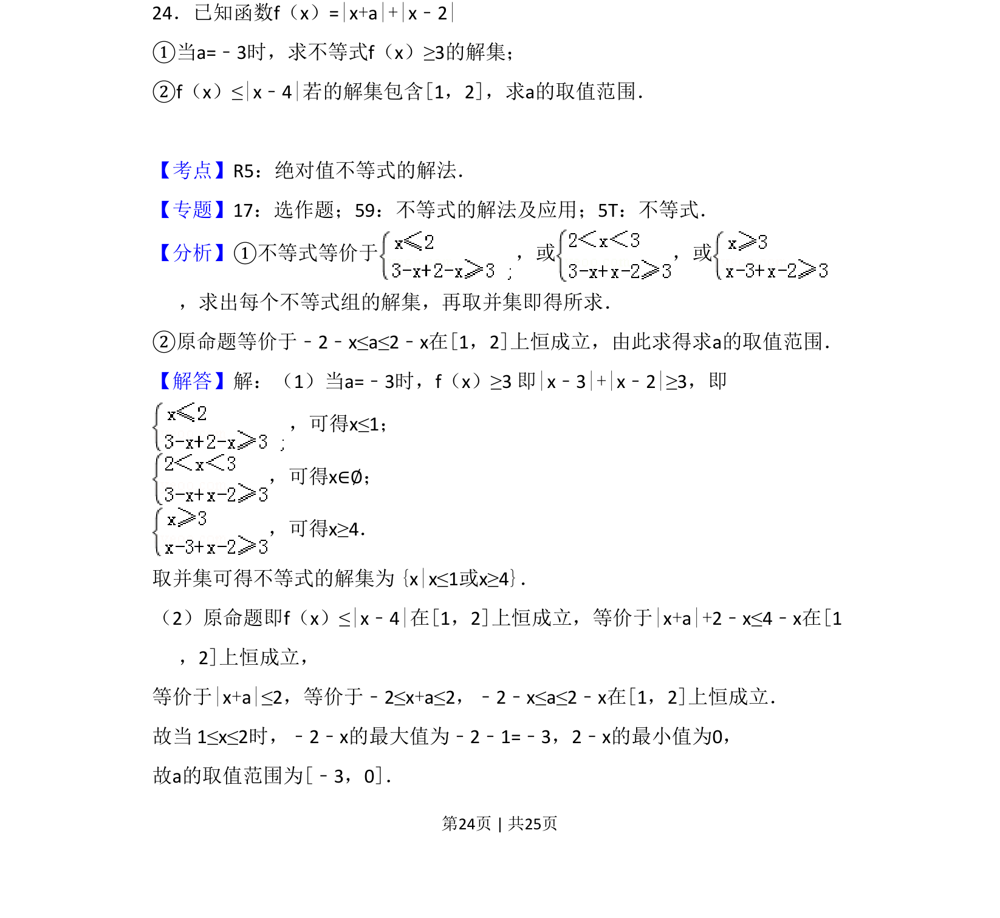
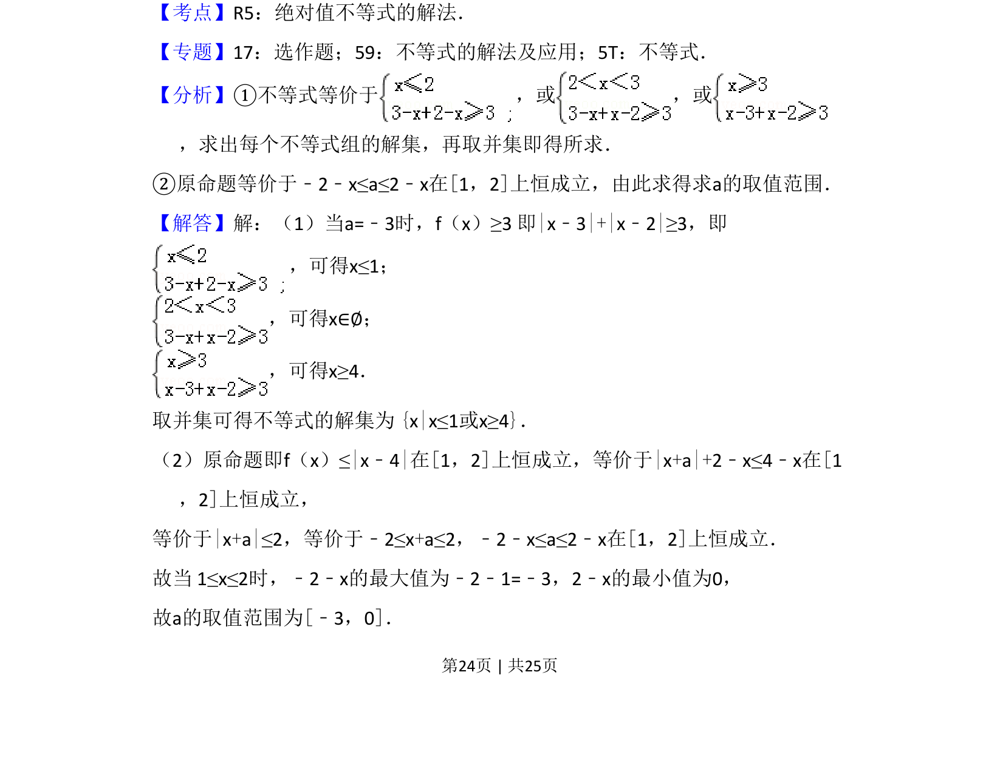
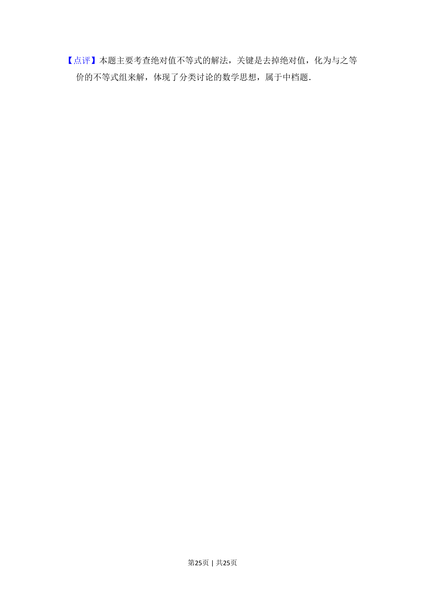

考点：绝对值不等式解法 恒成立问题 参数取值范围
绝对值不等式解法
恒成立问题
参数取值范围

考查含绝对值的不等式求解及在给定区间上恒成立求参数范围。


📄 原 PDF 第 24 页：素材/真题/吉林/2008-2024·（吉林）数学高考真题/2012年高考数学试卷（理）（新课标）（解析卷）.pdf
素材/真题/吉林/2008-2024·（吉林）数学高考真题/2012年高考数学试卷（理）（新课标）（解析卷）.pdf